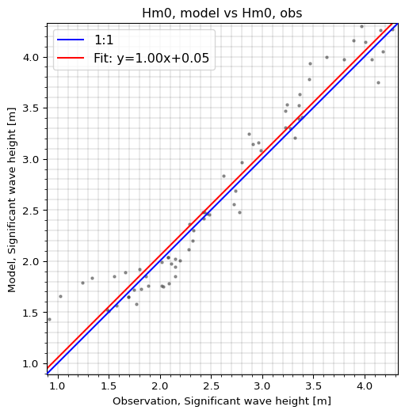
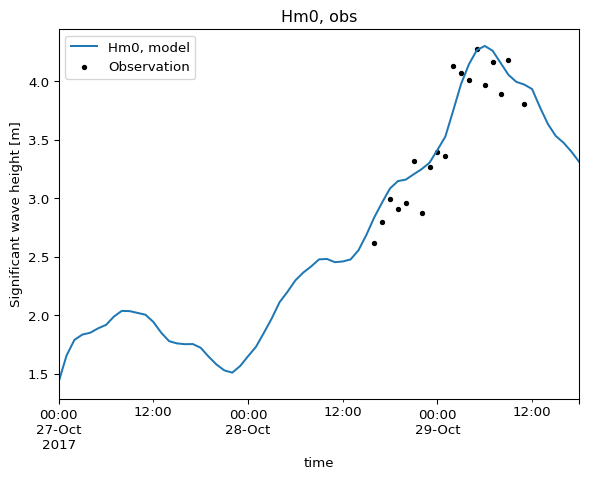
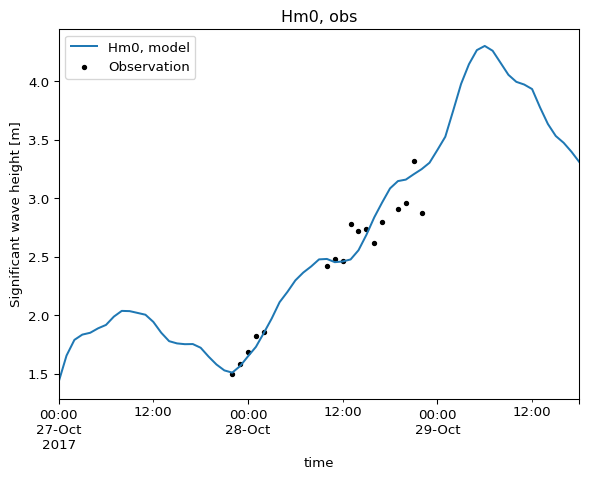

import modelskill as ms
import numpy as np
import pandas as pd
import mikeioPre-matched data with auxiliary data
fn = "../data/SW/eur_matched.dfs0"
mikeio.read(fn)<mikeio.Dataset>
dims: (time:67)
time: 2017-10-27 00:00:00 - 2017-10-29 18:00:00 (67 records)
geometry: GeometryUndefined()
items:
0: Hm0, model <Significant wave height> (meter)
1: Hm0, obs <Significant wave height> (meter)
2: Wind speed <Wind speed> (meter per sec)
3: Wind Direction <Wind Direction> (degree)The function from_matched() takes a dataframe, a dfs0 or a mikeio.Dataset of already matched data and returns a Comparer object.
cmp = ms.from_matched(fn, obs_item=1, mod_items=0, aux_items=[2,3])
cmp.aux_names['Wind speed', 'Wind Direction']# NOTE: we rename data_vars to avoid spaces in names
cmp = cmp.rename({"Wind speed": "wind_speed", "Wind Direction": "wind_dir"})cmp.aux_names['wind_speed', 'wind_dir']cmp<Comparer>
Quantity: Significant wave height [m]
Observation: Hm0, obs, n_points=67
Model(s):
0: Hm0, model
Auxiliary: wind_speed
Auxiliary: wind_dircmp.skill()| n | bias | rmse | urmse | mae | cc | si | r2 | |
|---|---|---|---|---|---|---|---|---|
| observation | ||||||||
| Hm0, obs | 67 | 0.052239 | 0.22824 | 0.222181 | 0.174851 | 0.968321 | 0.085898 | 0.929767 |
cmp.plot.scatter(quantiles=0, figsize=(6,6));
cmp.plot.timeseries();
Filter
Filter on auxiliary data using query() or where(). Below, we consider only wave data when the wind speed is above 15 m/s.
cmp.query("wind_speed > 15.0")<Comparer>
Quantity: Significant wave height [m]
Observation: Hm0, obs, n_points=19
Model(s):
0: Hm0, model
Auxiliary: wind_speed
Auxiliary: wind_dircmp2 = cmp.where(cmp.data.wind_speed>15.0)
cmp2<Comparer>
Quantity: Significant wave height [m]
Observation: Hm0, obs, n_points=19
Model(s):
0: Hm0, model
Auxiliary: wind_speed
Auxiliary: wind_dir# notice that the model data is kept, but the observations are filtered
cmp2.plot.timeseries();
More auxiliary data can be added, e.g. as derived data from the original data.
cmp.data["residual"] = cmp.data["Hm0, model"] - cmp.data["Observation"]large_residuals = np.abs(cmp.data.residual)>0.1
cmp3 = cmp.where(large_residuals)
cmp3.plot.scatter(figsize=(6,6));
cmp3.plot.timeseries();cmp3.data.data_varsData variables:
Observation (time) float64 320B 0.92 1.03 1.24 1.34 ... 3.46 3.37 3.24 3.23
Hm0, model (time) float64 320B 1.43 1.655 1.789 ... 3.634 3.531 3.473
wind_speed (time) float64 320B 9.754 11.06 11.42 10.93 ... 13.3 13.3 13.54
wind_dir (time) float64 320B 327.4 331.5 333.3 ... 343.0 340.8 343.6
residual (time) float64 320B 0.5101 0.6253 0.5495 ... 0.2907 0.2427cmp3.data.Observation.valuesarray([0.92000002, 1.02999997, 1.24000001, 1.34000003, 1.54999995,
1.65999997, 1.79999995, 2.1500001 , 2.20000005, 2.1500001 ,
2.1500001 , 2.08999991, 2.01999998, 2.02999997, 1.88999999,
1.76999998, 2.1099999 , 2.27999997, 2.31999993, 2.77999997,
2.72000003, 2.61999989, 2.79999995, 2.91000009, 2.96000004,
3.31999993, 2.86999989, 3.3599999 , 4.13000011, 4.01000023,
3.97000003, 3.8900001 , 4.17999983, 3.63000011, 3.79999995,
3.47000003, 3.46000004, 3.36999989, 3.24000001, 3.23000002])Aggregate
Let’s split the data based on wind direction sector and aggregate the skill calculation of the significant wave height predition for each sector.
Note: in this short example wind direction is between 274 and 353 degrees
df = cmp.data.wind_dir.to_dataframe()
windsectors = pd.cut(df.wind_dir,
[255, 285, 315, 345, 360],
labels=["W", "WNW", "NNW", "N"])
cmp.data["windsector"] = windsectors.astype(str)cmp.skill(by="windsector")| observation | n | bias | rmse | urmse | mae | cc | si | r2 | |
|---|---|---|---|---|---|---|---|---|---|
| windsector | |||||||||
| NNW | Hm0, obs | 28 | 0.115715 | 0.285428 | 0.260920 | 0.230681 | 0.969837 | 0.103408 | 0.927645 |
| N | Hm0, obs | 7 | 0.070214 | 0.252445 | 0.242484 | 0.222582 | 0.991219 | 0.082961 | 0.859219 |
| WNW | Hm0, obs | 15 | -0.044628 | 0.141796 | 0.134590 | 0.107524 | 0.984303 | 0.049652 | 0.965368 |
| W | Hm0, obs | 17 | 0.025762 | 0.164749 | 0.162723 | 0.122650 | 0.962449 | 0.066609 | 0.903978 |
cmp.skill(by="windsector").rmse.plot.bar(title="Hm0 RMSE by wind sector");cmp.where(cmp.data.windsector=="W").plot.timeseries();